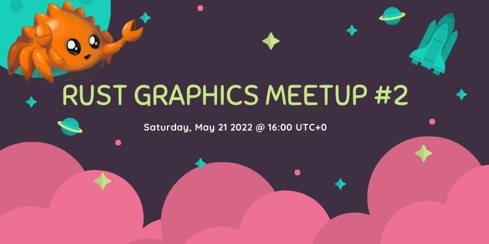

Rust Graphics Meetup 2

The second Rust Graphics Meetup will take place on May 21st at 16:00 UTC+0. This meetup is a chance to see what others have been working on in the Rust graphics community. You can see the videos from the first meetup here.
The meetup will take place on the Rust Gamedev YouTube and Twitch.
Schedule
Vismut | Lukas Orsvärn
16:00 - 16:20
Vismut will be a procedural texturing tool for Windows and Linux, allowing for a 100% non-destructive material creation workflow. This means you build textures from scratch using procedural nodes, allowing for changes to any step in the process at any time, including changing the texture's resolution.
Screen-13 | John Wells
16:20 - 16:30
Screen 13 is an easy-to-use Vulkan rendering engine in the spirit of QBasic.
Optimizing wgpu with Data Driven Design | Connor Fitzgerald
16:30 - 17:00
A look into how Data Driven Design is the key to the performance increases coming in wgpu 0.13 and what the future holds for solving long standing performance bottlenecks in the codebase. wgpu is the graphics abstraction at the core of many rust projects and ensuring it is as fast as possible will push the boundary of what is possible in safe Rust today.